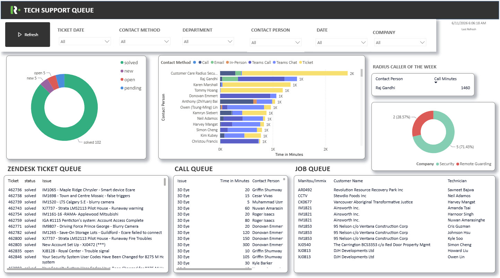
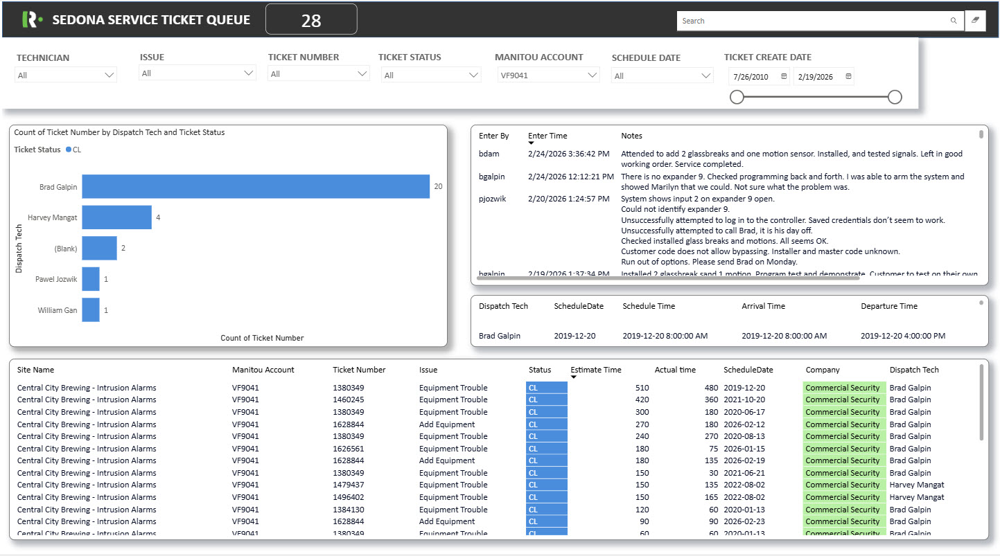
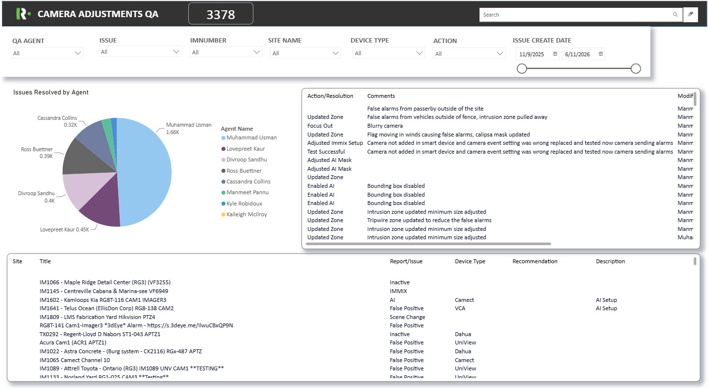

The Support Queue Dashboard was developed in Power BI to provide comprehensive visibility into the activities of the Technical Support, Quality Assurance (QA), and Service departments. The dashboard tracks support calls, service tickets, and the amount of time spent resolving issues, enabling management to monitor workload distribution, operational efficiency, and overall service performance across departments
Data
The dashboard consolidates data from multiple sources to provide accurate and up-to-date reporting. Zendesk data is integrated through a Power BI connector to capture customer support requests and interdepartmental tickets. A Power App is used to record and track the hours spent by technical support staff on various tasks and customer interactions. Installation and service ticket information is sourced from a SQL database through an on-premises gateway connection. In addition, Power Automate is utilized to provide an on-demand refresh capability, allowing users to update reports whenever required.

Support Queue
The Support Queue page focuses on Technical Support operations by providing detailed insights into how support resources are allocated. It tracks the time spent by support personnel assisting customers, internal departments, and field technicians through phone calls, Microsoft Teams calls, and Teams chats. Interactive visualizations, including bar charts and pie charts, help management identify recurring issues, training opportunities, equipment reliability concerns, and areas where standard operating procedures can be introduced to reduce call volumes. To increase engagement and visibility on the department display monitor, a "Radius Caller of the Week" feature highlights the company whose employees required the most support time during the reporting period, based on the combined total of phone calls, Teams calls, and Teams chat interactions.

Service Ticket Queue
The Service Ticket Queue page provides a detailed overview of field service activities. It tracks technician dispatches, site visits, completed service tickets, and associated service notes. This information allows management to demonstrate the value of ongoing maintenance and support efforts to customers by documenting the work performed behind the scenes to keep systems operational. The dashboard also serves as a valuable reference for support teams by providing historical information about previous site visits and completed service activities.

Camera Adjustment QA
The Camera Adjustment QA page is designed to monitor Quality Assurance activities related to camera systems. It records both remote and on-site camera adjustments and inspections performed by the QA team. Since quality assurance checks are conducted daily to ensure all systems operate as intended, this dashboard provides a centralized view of completed activities, helping management track performance, maintain accountability, and ensure service standards are consistently met.
Project History
This project was initiated in response to a management request for greater visibility into the time and resources invested across multiple departments when supporting customer sites. By tracking troubleshooting efforts, service activities, and quality assurance tasks, the dashboard enables data-driven decision-making regarding technology investments, service pricing, resource allocation, and employee training. The insights gained from the platform support more accurate project quotations, improved operational planning, and continuous service improvement across the organization.